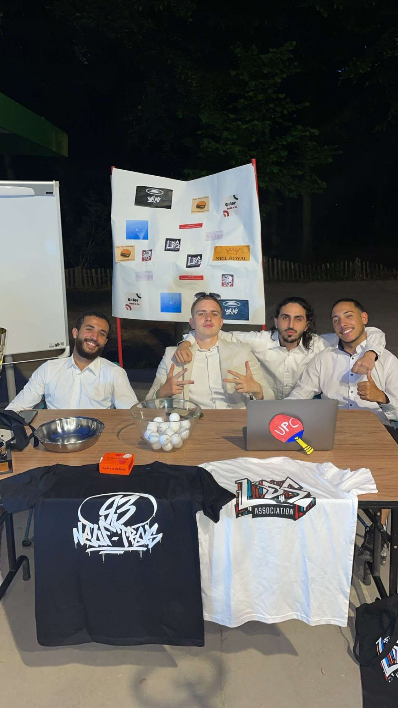

Aider les personnes qui en ont besoin est très important pour nous.

Ligue des souvenirs
Née le 13 février 2024 à Tremblay-en-France, LDS Association a été créée par des jeunes passionnés de sport. Leur idée est simple : utiliser le sport pour rassembler les gens et aider ceux qui en ont besoin.
L’association organise des événements sportifs ouverts à tous pour collecter des fonds et soutenir des actions solidaires. Son objectif est de favoriser l’entraide, le partage et d’aider les personnes en difficulté.
Nos valeurs
Le sport rassemble, permet de se dépasser et de partager des moments ensemble.
Notre histoire
Février 2024
Création de l’association LDS à Tremblay-en-France.
2024
Mise en place des premiers projets et des actions solidaires.
2025
Organisation des premiers événements sportifs solidaires.
Origine du nom
"Ne sois pas triste car c'est fini. Sois heureux que ce soit arrivé."
Phrase d'un vétéran du club de tennis de table de Tremblay, à l'origine du nom de l'association
L'équipe
Noan Mlavonic (Président)
Dan Diego Seixas (Vice-président)
Toufik Bendjebbour (Secrétaire)
Yassine Meddah (Trésorier)